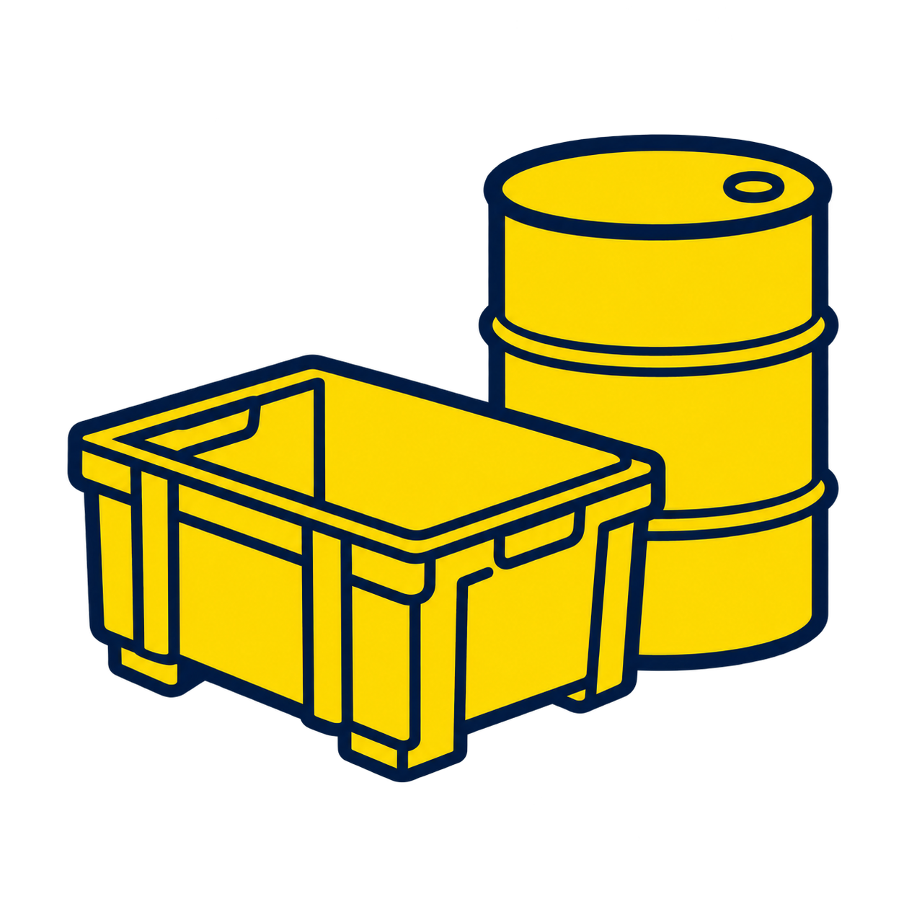

GOODYEAR
Connectez-vous pour accéder aux équipements partagés.
Laissez décoché sur un poste partagé.

À TRAITER EN PRIORITÉ
POINTS DE VIGILANCE
Un contrôle réalisé peut signaler un défaut. L’avancement mesure les contrôles enregistrés et ne certifie pas la conformité.
VOTRE SEMAINE VGP
FaitÀ faireNon fait — en retardIntrouvableMis au rebut
Faites défiler les jours pour parcourir la semaine.
Voir la planification complète
La signature enregistrée est intégrée aux rapports du contrôleur. Une copie est conservée avec chaque nouveau contrôle.
Échéances traitées / prévues dans le mois. Contrôles effectués, introuvables et mises au rebut comptent comme faits. Objectif : 100 % chaque mois.
Les mois sans contrôle prévu n’ont pas de pourcentage. Cliquez sur « Voir les échéances » pour consulter les équipements et leur avancement. Un contrôle réalisé, une déclaration introuvable ou une mise au rebut compte comme fait dans le mois de l’échéance prévue, même si son traitement est plus tardif. Le dénominateur initial est conservé ; les exclusions restent visibles.
Parc actif · variantes regroupées.
GOODYEAR AMIENS · ÉQUIPES
Matin 05 h–13 h · Soir 13 h–21 h · Nuit 21 h–05 h le lendemain. Heure de Paris.
Pour activer le planning partagé : ouvrir le script Supabase 008, puis l’exécuter dans SQL Editor.
Tapez uniquement le numéro : 033 devient CA033. Appuyez sur Entrée pour l’ajouter.
Aucun numéro ajouté pour le moment.
Fiches repérées dans les commentaires d’intervention : « mise au rebut », « mise en benne » ou « destruction ». Leur historique reste consultable.
Interventions enregistrées, regroupées comme dans le classeur d’analyse. Les réparations comptent les pièces renseignées avec une valeur différente de « OK ».
Nombre d’interventions dans l’année sélectionnée, tous contenants confondus.
Survolez une barre, cliquez dessus ou utilisez le clavier pour afficher sa répartition. Chaque couleur correspond à un type de contenant.
Une ligne d’intervention du mois compte pour une action, même si un contenant en a plusieurs. Le type « Divers » regroupe les types non classés.
Des modèles prêts à utiliser, un aperçu clair et un test depuis ta messagerie.
PARAMÈTRES · RAPPORTS VGP
En-tête et présentation des rapports de vérification.
Importez le fichier officiel autorisé par votre entreprise. Le logo sera affiché au centre de l’en-tête du site et intégré dans les PDF, sans connexion Internet.
FICHE VGP
DOCUMENTS · APERÇU AVANT VALIDATION
Analyse locale, correspondances vérifiées puis validation humaine.
RAPPORTS DE VÉRIFICATION
Ajoutez le PDF original pour retrouver les équipements et préparer leurs contrôles. Vérifiez les correspondances, les résultats et les pages avant de confirmer l’import.
ACTIONS DE MAINTENANCE
Associez les observations et leurs gravités aux équipements existants, puis vérifiez l’aperçu avant de créer les actions à faire.
RÉFÉRENTIELS · ADMINISTRATION
Exporter une copie des données ou restaurer une sauvegarde locale.
Outils de reprise ponctuelle. Les imports APAVE courants se trouvent dans « Imports et rapports ».
Les anciens imports et outils de reprise restent disponibles ici si vous en avez besoin. Les données déjà enregistrées sont conservées.
Exportez une sauvegarde avant de confirmer. Les anciens contrôles et documents restent présents ; les déclarations Introuvable sont exclues des réalisations.
Exportez d’abord une sauvegarde JSON depuis la liste du matériel. La migration est réservée à un administrateur et à un espace vierge. Aucun stockage local n’est effacé.
Sélectionnez l’export complet des contrôles (.csv ou .xlsx). Seul le dernier suivi réglementaire de chaque équipement est repris. Les autres niveaux ne sont pas ajoutés comme VGP.
Ouvrir le correctif Supabase pour les écritures volumineuses (027_equipment_fast_save.sql)
Proposer le classement des fiches importées sans échéance selon leurs noms et commentaires, avec mise au rebut par défaut sans mention, selon votre consigne.
Préparer et télécharger un fichier MemoryFlow au bon format
Fichier .xlsx, première feuille. Le modèle simple accepte Numéro interne (ou N° interne) et Nom. Les exports MemoryFlow sont reconnus : plusieurs lignes pour un même ID source sont regroupées en une fiche. Les dates et informations d’origine sont conservées sans inventer de contrôle réalisé.
Vérifiez les différences, doublons et champs manquants dans l’aperçu. Aucune fiche existante n’est remplacée.
RÉFÉRENTIEL · NOMENCLATURE
Proposer, vérifier puis appliquer. Noms historiques, repères et variantes conservés ; affectations, périodicités et échéances inchangées.
Le catalogue existant sert de référence. Aucune proposition n’est appliquée avant votre validation. Les noms historiques restent consultables et recherchables.
Les variantes décrivent une caractéristique technique. Un numéro, un salarié ou un emplacement doit rester dans son champ distinct. Les corrections réinitialisent la validation de la ligne.
Renommer un type actualise son libellé pour toute la catégorie. Les données de suivi sont conservées.
Une règle associe un ancien nom exact à un type et une variante du catalogue. La casse, les accents et les séparateurs sont ignorés ; aucune correspondance approximative n’est appliquée. Modifier une règle conserve son historique.
Choisissez le type et la variante dans Catalogue, puis vérifiez les fiches ci-dessous avant application.
Choisissez les noms actuels qui correspondent au même matériel, puis leur type et variante. Vérifiez les équipements avant d’appliquer : aucun rapprochement automatique, aucun ancien nom supprimé.
Sélectionnez une fiche existante ou créez un propriétaire.
Renseignez la date prévue du prochain contrôle.
Laissez vide si la situation doit encore être vérifiée. Aucun délai n’est calculé depuis la création de la fiche.
Pour un équipement neuf, laissez cette rubrique vide. Renseignez-la uniquement pour reprendre un contrôle réellement effectué, avec sa date et son justificatif.
Le contenant sera déplacé dans les archives. Sa fiche et ses interventions resteront consultables.
Fiche distincte du parc VGP, sans propriétaire ni ligne.
Le numéro d’équipement retrouve la fiche existante. La colonne Type1 devient la catégorie, la colonne Type devient la sous-catégorie. Les interventions et les numéros restent inchangés.
Sélectionnez les classeurs Excel des réparations. Chaque valeur de « # équipement » crée ou retrouve une fiche ; « N° d’intervention » devient une ligne de son historique. Les interventions déjà présentes sont ignorées. Les classeurs sélectionnés ensemble peuvent se compléter si une ligne sans contenant correspond sans ambiguïté à une ligne renseignée.
Renseignez le contrôle ou le travail réalisé sur ce contenant.
Contrôle réglementaire · résultat déclaré par l’intervenant.
Introuvable : décrivez les recherches effectuées. La fiche sera archivée avec la date, l’auteur et le commentaire. Aucune VGP réalisée ni aucune validité ne sera ajoutée.
Une seule fiche par propriétaire. Si la personne existe déjà, sélectionnez sa fiche.
Vous pourrez compléter l’équipe, le service et le secteur dans sa fiche.
Plusieurs propriétaires peuvent être associés. Les rôles et règles de rappels seront définis ensuite. Aucun e-mail automatique n’est envoyé.
Matériel en suivi, introuvables compris. Les équipements mis au rebut sont exclus. Un équipement peut être associé à plusieurs propriétaires. Les associations existantes sont conservées.
Simulation : aucun message n’a été envoyé.
Cette date définit l’échéance ; aucun contrôle réalisé n’est ajouté. Les modifications sont conservées dans l’historique.
Échéances à un mois ou moins et retards. Les alertes se mettent à jour après chaque contrôle.
Mails : envoi automatique non connecté. Aucun mail n’est présenté comme envoyé.
La fiche sera réactivée en « Situation à vérifier ». Aucun contrôle ni aucune période de validité ne sera ajouté automatiquement.
Analyse sur cet appareil, sans IA ni service externe. Le PDF original reste entier. Il sera envoyé une seule fois au stockage privé Supabase après votre validation.
Ouvrez chaque ligne pour lire le résultat, les observations et les limites de la vérification. Les correspondances sont proposées uniquement sur un identifiant exact. Les lignes non reconnues restent à associer manuellement.
Les vérifications complètes préremplissent le résultat : « Bon état », « Réalisé — observations à traiter », ou « Mis au rebut » selon la conclusion APAVE. Vérifiez le lot puis confirmez : les contrôles sont enregistrés, les prochaines échéances recalculées et les mises au rebut archivées. Un matériel absent ou non vérifié conserve son statut et sa date. Les observations sont conservées intégralement sans être assimilées à un bon état ou à un mauvais état réparable. Les vérifications partielles restent des constats à examiner. Vous pouvez corriger chaque proposition avant validation.
Ouvrir le script d’activation du stockage privé et de l’import APAVE
Les éléments non vérifiés, partiels ou incomplets sont conservés comme constats, sans être comptés comme une VGP complète. Aucun équipement n’est créé ou archivé automatiquement.
Seule la feuille calendrier global est lue. Les sous-équipes et leurs postes sont ignorés. Aucun import avant le 1er octobre 2026 ; aucune rotation n’est prolongée hors des dates du fichier.
Lecture locale, sans exécution des macros. Le fichier Excel n’est ni publié sur GitHub ni envoyé à un service externe. Seules les affectations confirmées et leur historique sont enregistrés.
Cet espace est en préparation.